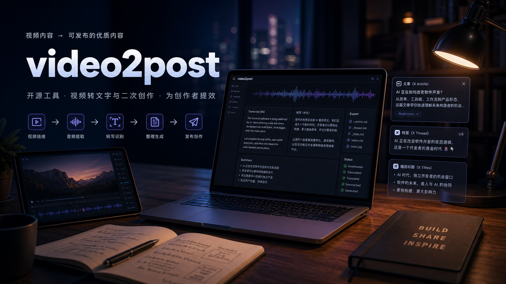

视频内容 -> 可发布的优质内容
把技术视频变成中文笔记、长文、thread 和封面素材。

痛点不是看视频
$ video2post process URL --generate
Downloaded audio.wav
Transcribed transcript.en.md
Translated transcript.zh.md
Generated publish draftsCLI-first · 本地文件 · 可二次创作
为技术博主和内容创作者节省真正耗人的后半程。
开源内容生产工具
视频转文字与二次创作，为创作者提效。